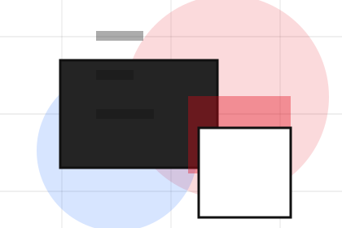
EssayStudio templates essay
Templates gives the page a specific angle instead of repeating the navigation label.
Open resourceShop / 01
Shop opens as a clear creative decision hub: what Studio offers, who it helps, why it matters, and which route to take first.
The first screen combines positioning, proof, primary action, and fast internal navigation, so people can act immediately or compare the rest of the shop route with context.
Typographic work hero
Select the closest route and Studio keeps the next step, proof, and follow-up expectation aligned with taste and production trust.
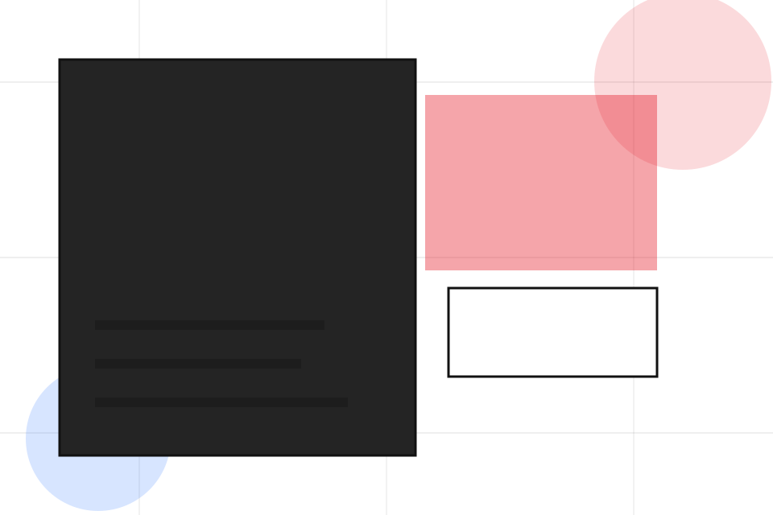
Shop / 02
Templates adds editorial context to the shop route, using the graphic design portfolio grid structure to support taste and production trust before visitors choose a next step.
Studio uses identity project cards and focused copy to make the decision easier to scan, aligning the section with taste and production trust rather than filling space.
Explore ShopTemplates gives the page a specific angle instead of repeating the navigation label.
The identity project cards show what to compare, what to avoid, and what matters most for creative, design & visual production visitors.
The final cue points to a useful internal route so the section keeps the journey moving.

EssayTemplates gives the page a specific angle instead of repeating the navigation label.
Open resource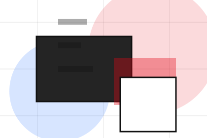
IndexThe identity project cards show what to compare, what to avoid, and what matters most for creative, design & visual production visitors.
Open resource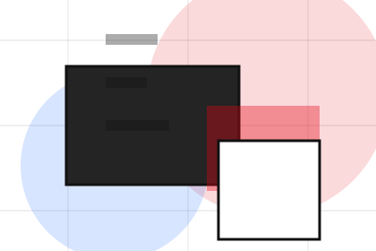
BriefThe final cue points to a useful internal route so the section keeps the journey moving.
Open resourceShop / 03
Prints adds editorial context to the shop route, using the graphic design portfolio grid structure to support taste and production trust before visitors choose a next step.
Studio uses identity project cards and focused copy to make the decision easier to scan, aligning the section with taste and production trust rather than filling space.
Explore ShopPrints gives the page a specific angle instead of repeating the navigation label.
The identity project cards show what to compare, what to avoid, and what matters most for creative, design & visual production visitors.
The final cue points to a useful internal route so the section keeps the journey moving.
Shop / 04
Assets gives researching visitors a practical route into guides, checklists, and comparison material without leaving the site structure.
Each resource behaves like a useful internal link, giving cold and warm visitors a way to learn, compare, and return to the action path.
Explore Shop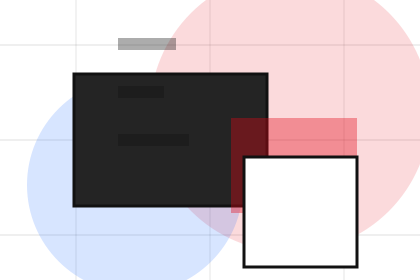
A useful entry point for visitors who need more context before they start the project.
Shop / 05
Licenses adds editorial context to the shop route, using the graphic design portfolio grid structure to support taste and production trust before visitors choose a next step.
Studio uses identity project cards and focused copy to make the decision easier to scan, aligning the section with taste and production trust rather than filling space.
Explore ShopLicenses gives the page a specific angle instead of repeating the navigation label.
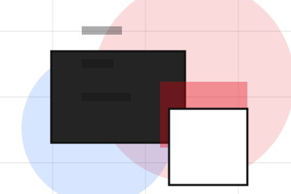
The identity project cards show what to compare, what to avoid, and what matters most for creative, design & visual production visitors.
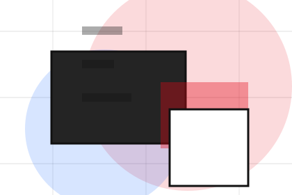
The final cue points to a useful internal route so the section keeps the journey moving.
Shop / 06
Details adds editorial context to the shop route, using the graphic design portfolio grid structure to support taste and production trust before visitors choose a next step.
Studio uses identity project cards and focused copy to make the decision easier to scan, aligning the section with taste and production trust rather than filling space.
Explore ShopDetails gives the page a specific angle instead of repeating the navigation label.
The identity project cards show what to compare, what to avoid, and what matters most for creative, design & visual production visitors.
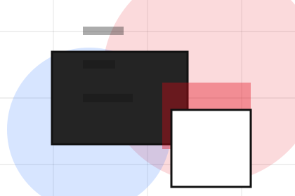
The final cue points to a useful internal route so the section keeps the journey moving.
Shop / 07
Usage adds editorial context to the shop route, using the graphic design portfolio grid structure to support taste and production trust before visitors choose a next step.
Studio uses identity project cards and focused copy to make the decision easier to scan, aligning the section with taste and production trust rather than filling space.
Explore ShopUsage gives the page a specific angle instead of repeating the navigation label.
The identity project cards show what to compare, what to avoid, and what matters most for creative, design & visual production visitors.
The final cue points to a useful internal route so the section keeps the journey moving.
Shop / 08
Downloads gives researching visitors a practical route into guides, checklists, and comparison material without leaving the site structure.
Each resource behaves like a useful internal link, giving cold and warm visitors a way to learn, compare, and return to the action path.
View ResourcesA useful entry point for visitors who need more context before they start the project.
A scannable comparison aid that makes research usable before the next decision.
A route back to support, services, or contact when the visitor is ready to act.
A useful entry point for visitors who need more context before they start the project.
Open resource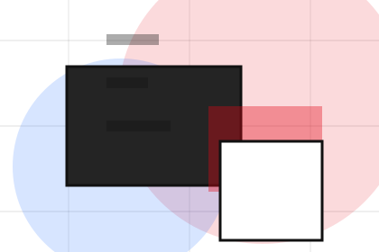
IndexA scannable comparison aid that makes research usable before the next decision.
Open resource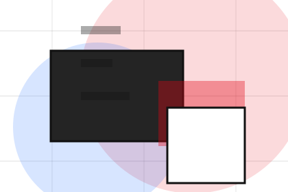
BriefA route back to support, services, or contact when the visitor is ready to act.
Open resourceShop / 09
Buy adds editorial context to the shop route, using the graphic design portfolio grid structure to support taste and production trust before visitors choose a next step.
Studio uses identity project cards and focused copy to make the decision easier to scan, aligning the section with taste and production trust rather than filling space.
Explore ShopBuy gives the page a specific angle instead of repeating the navigation label.
The identity project cards show what to compare, what to avoid, and what matters most for creative, design & visual production visitors.
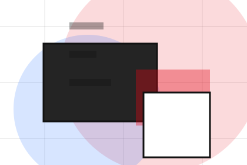
The final cue points to a useful internal route so the section keeps the journey moving.
Shop / 10
Studio closes the shop route with a clear action, a quick reminder of the value, and a low-friction way to start the project.
Visitors who are ready can use the primary action. Visitors who are still comparing can scan the section links, proof, and support routes before they start the project.
Start ProjectThe final block keeps the choice simple: act now, compare one more proof route, or send enough detail for a focused response.
Start Projecttaste and production trust
A creative portfolio with identity-led project tiles, typographic scale, lightbox logic, and studio enquiry. Shop ends with a direct path to start the project, plus enough context for visitors who still need to compare.
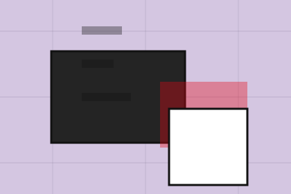
Start ProjectInformation is provided for planning and should be reviewed for the final client, location, and operating rules.